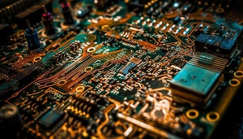

Historia e Conceito Dos Microcontroladores
Microcontrolador é um pequeno computador (SoC) num único circuito integrado o qual contém um núcleo de processador, memória e periféricos programáveis de entrada e saída. A memória de programação pode ser RAM, NOR flash ou PROM a qual, muitas vezes, é incluída no chip. O primeiro microprocessador foi o 4-bit Intel 4004 lançado em 1971. O Smithsonian Institution, com os créditos do produto para os engenheiros da Texas Instruments Gary Boone e Michael Cochran criaram o primeiro microcontrolador comercial em 1971.
Microcontroladores são geralmente utilizados em automação e controle de produtos e periféricos, como sistemas de controle de motores automotivos, controles remotos, máquinas de escritório e residenciais, brinquedos, sistemas de supervisão, etc.
Os microcontroladores são programados geralmente por computadores ou discos de memoria. Existindo então algumas ferramentas que criam uma ponte de transferência de dados entre o aparelho utilizado e o microcontrolador, o Arduino por exemplo.